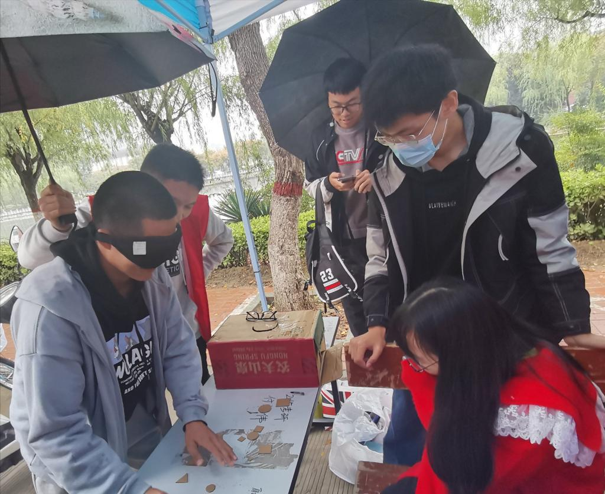

International Day of the Blind activity held by the Youth Association of The School of Computer and Information Engineering
Date:16, October, 2020 Author:Zhou Mingxin
Photography: WangKe

In order to welcome the 36th International Day of the Blind, express our concern for the blind community, and make more people pay attention to and understand the living conditions of the blind, the Youth Volunteer Association of our college held the International Day of the Blind with the theme of "Seeing the world with the heart" in front of the No.2 Building of the General Building of Jinming Campus on October 15.
Before the start of the activity, volunteers made students understand the background of International Day for the Blind and its significance through online publicity, which aroused widespread concern. At 10: 00 on October 15, after a series of work such as pulling banners, setting tables and moving tents were completed in an orderly manner, the activity started as scheduled. Love surged in front of the No.2 complex building, and many students actively participated in the activity. Students either closed their eyes and painted according to the given words; Or blindfolded, sorting cards of different sizes by hand feeling. Students who participated in booth games left the light for a short time, perceived the world from the blind's point of view, and then understood the blind's living conditions, and had a deeper understanding of the blind social group. At the same time, volunteers also publicized the importance of rational use of eyes and eye protection to students, and popularized little knowledge about eye care. The game process was confused and the sight was blocked and it enables you to get out of the comfort zone and feel the darkness. The game process is also full of gains when the simple and easy games can make people get new life experiences and feelings during stumbling. At 7 o'clock in the evening, the activity came to an end with the fading sky.
Through this voluntary activity, more people begin to understand the International Day for the Blind and pay attention to the blind people. They can't see the faces of the people around them,but they long to feel the warmth of you and me.We hope that we can extend our tender hands to find the light for our friends in the dark. At the same time, the activity is in line with the volunteer motto of "dedication, friendship, mutual assistance and progress", which makes the volunteer spirit more deeply rooted in the people's hearts.